Claude Code 主循环 Query 图解：一轮对话是怎么跑起来的？
大家好，我是小林。
最近有位林友跟我说，他去面试，被问到一道很硬核的题目：「介绍一下 Claude Code 主循环 Query 的流程？」
这题面试官想考的，其实不是 Claude Code 本身，而是看你对一个工业级 Agent 的循环架构有没有真正想过。
你是停在「调模型、跑工具」这种皮毛上，还是真的往下挖过：模型吐字的时候怎么控？出错了怎么兜？状态怎么跨轮不丢？这才是面试官想听你聊的东西。
很可惜，这位林友当时只答到「就是一个 while 循环，调模型、跑工具、再调模型」就接不下去了，面试官摇了摇头让他先回去等通知。
今天这篇文章，我就把 Claude Code 源码里这个主循环（叫 queryLoop）的设计，由浅入深给大家扒一遍。
整个主循环的实现核心在一个 1729 行的文件里，我会带着大家解答下面这些疑问，比如：
- 敲完回车，Claude Code 内部到底发生了什么？
- 从 ask 到 queryLoop：一句话怎么穿过四层调用？
- Agent 怎么知道「该用工具」还是「该停下来」？
- 模型还在吐字、工具就开跑了？这怎么做到的？
- 工具跑挂之后，对话凭什么还能继续？
- 模型输出被截断了，怎么让用户根本感觉不到？
文章依旧硬核到底，发车！
一、敲完回车，Claude Code 内部到底发生了什么？
我们先从一个最朴素的场景开始。
你在终端打开 Claude Code，敲一句「帮我修复这个 bug」，然后回车。30 秒后，Claude 给你返回了修复方案，并且把代码也改好了。
这 30 秒里，到底发生了什么？
很多没接触过 Agent 开发的同学，第一反应是：「这有啥，就是把你的问题发给大模型，大模型回个答案嘛。」
如果真这么简单，那 Claude 怎么知道你说的「这个 bug」具体在哪个文件？它又是怎么把代码改到磁盘上的？
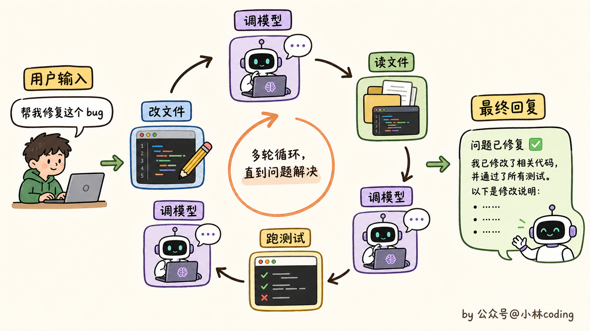
多轮循环示意图
真实情况是这样的：你这句话发出去之后，大模型第一次回复你的可能不是答案，而是「我需要先看一下你提到的那个文件」。
Claude Code 听到这个，就去读那个文件，把文件内容塞回去再问一遍。大模型这时候可能又说「我得跑一下测试看看现在的报错」，于是 Claude Code 又去跑测试，把报错塞回去……
来来回回好几轮，模型才会说「我知道了，这个 bug 是因为 X，我已经把修复写好了」。
这时候这一轮对话才真正结束。
这个不停「调模型 → 看结果 → 决定下一步」的循环，就叫主循环（Query Loop），是整个 Agent 的「心脏」。
Agent 心脏示意图
理解到这一层还不够。主循环这个东西，你们听上去会觉得很简单：
while (true) {
调模型()
if (模型说要用工具) {
执行工具()
} else {
break
}
}
如果真这么写，能跑通一个 demo，但在真实生产环境里会被千锤百炼出无数个 bug：
- 用户中途按 Ctrl+C 怎么办？
- 工具跑到一半挂了，下一轮调模型会被 API 直接拒收，怎么救？
- 模型输出超长被截断了，怎么续？
- 上下文太长塞不进去了，要不要压缩？什么时候压？
- 跑了 50 轮还没收敛，要不要强行止损？
Claude Code 的 1729 行主循环代码，80% 都在处理这些「异常路径」，真正的「正常路径」可能 200 行就写完了。这也是我说它是一份工业级教科书的原因。
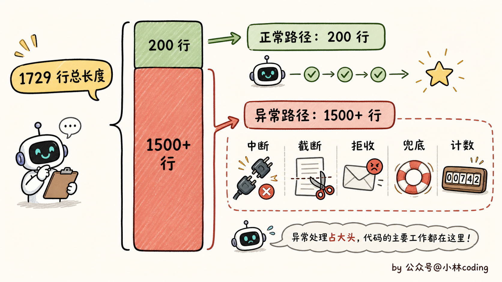
主循环代码占比柱状图
接下来我们一层一层剥开。
二、从 ask 到 queryLoop：一句话怎么穿过四层调用？
要讲清楚主循环，得先看你在终端敲的那句话，在代码里到底走了几道关。
为什么要分层？我打个生活类比。
你家水龙头流出来的水，看上去就是「打开龙头水就来」，背后其实经过了四道关：水厂净化 → 街道主管线 → 小区水箱加压 → 你家管道末端。每一道关都有自己的职责，不能直接把水厂接到你家水龙头，那样既不安全也不灵活。
Claude Code 的主循环也是这样分层的：最外面一层管「你怎么用它」（就像水龙头），往里一层管「这次对话怎么记账」（就像小区水箱缓存水量），再往里一层管「怎么把事件源源不断吐给外面」（就像主管线持续供水），最里面那一层才是「真正干活的循环本体」（就像水厂在 24 小时净化）。
这四层从外到内分别叫 ask、QueryEngine.submitMessage、query、queryLoop。
这四层在源码里的调用关系，简化成伪代码长这样：
// 第一层 ask：SDK 入口，一次性调用
async function* ask(params) {
const engine = new QueryEngine(config)
yield* engine.submitMessage(params.prompt)
}
// 第二层 QueryEngine：管这次对话的会话状态
class QueryEngine {
async *submitMessage(prompt) {
// 处理 /斜杠命令、组装系统提示、注入上下文 ……
yield* query({ messages, systemPrompt, tools, ... })
}
}
// 第三层 query：流式包装层
async function* query(params) {
yield* queryLoop(params)
}
// 第四层 queryLoop：核心循环本体
async function* queryLoop(params) {
while (true) {
// 准备消息 → 调模型 → 判断 → 执行工具 → 塞回结果
}
}
注意每一层都是 yield* 接力往下传，意味着最里面 queryLoop 抛出的每一个事件，都能原封不动一路冒到最外面 ask 的调用方手里。这是「边干边吐」这条流水线能贯通的关键。
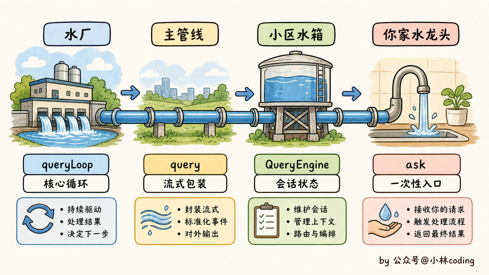
四层调用链水流类比图
我们从外往里看每一层。
最外面那层叫 ask，是给 SDK 一次性调用的便捷入口。你写个脚本想跑一次 Claude，最少代码量就是 await ask({ prompt, ... })。它内部其实只做一件事：新建一个 QueryEngine 实例，然后转交给它。
第二层 QueryEngine 才是真正管「会话」的家伙。它维护着这次对话的消息历史、文件缓存、权限拒绝记录这些跨轮持久化的状态。你可以把它想象成一个对话窗口的「记账本」，每说一句话、每读一个文件，都得在它这里登记。
第三层 query 长得很特殊，它是个「会一边干活一边吐结果」的函数。普通函数是干完所有事情、最后一次性 return 一个结果。但 query 不一样，它会在干活的过程中，每完成一件事就立刻把结果抛出去给外面用。这种「边干边吐」的函数，在 JavaScript 里有个专门的名字，叫异步生成器（async generator）。
最内层 queryLoop 才是 while (true) 循环本体，是真正干活的「心脏」。
讲到这里你可能会问：为啥要分这么多层？尤其是 query 这一层，它就只是个简单的包装，为啥不直接把 queryLoop 暴露出去？
这就要讲到主循环最关键的一个设计选择：为什么必须用异步生成器？
我们用一个生活类比来理解。
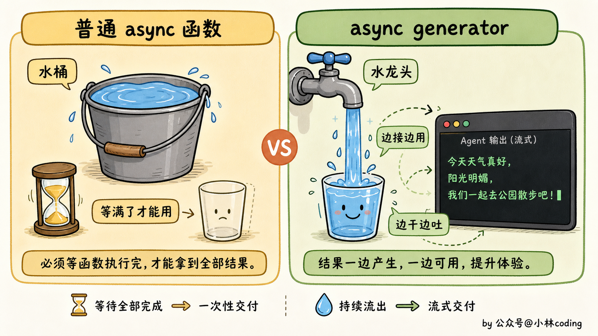
水龙头 vs 水桶类比图
普通的 async 函数，就像让你接一桶水。你打开水龙头之后，必须等水接满了，整桶端走，才能用。对应到 Agent 上，就是「你问一句，等几十秒模型把完整答案吐完，你才能看到结果」。
异步生成器就是水龙头本身。模型每吐出一个字符、每跑完一个工具，立刻就能流出来给你看。
这就是为什么你在 Claude Code 里敲完回车，能立刻看到模型一个字一个字地在打字，而不是干等几十秒突然蹦出一大段文字。这种「边干边吐」的能力，不仅是用户体感，更是后面第五章会讲到的「流式 + 并行工具执行」的前提条件。
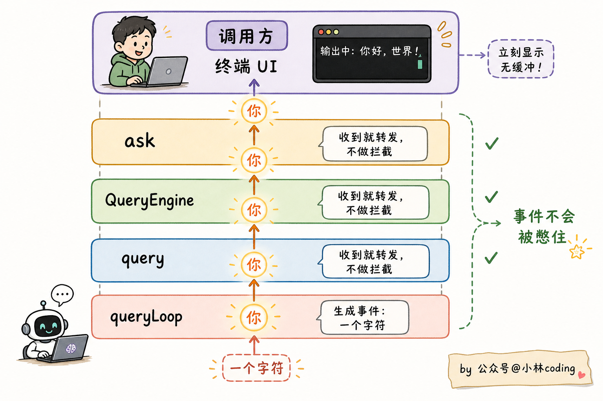
事件接力流水线示意图
异步生成器的语法长什么样？我们看一眼源码（来自 query.ts），里面有两个关键标记：
export async function* query(params) {
const terminal = yield* queryLoop(params, ...)
return terminal
}
第一个是函数前面那个 *（写法是 async function*），它告诉 JS 这是一个异步生成器，不是普通函数。第二个是 yield* 这个表达式，它的意思是「把 queryLoop 里所有抛出来的东西，原封不动地接力往外抛」，专门用来串联两个生成器。
这层包装看上去什么都没做，但它的作用是把对话生命周期的收尾工作（比如最后还要通知一些清理事件），和核心循环逻辑解耦开，让 queryLoop 只管「转圈」，不操心「转完之后还要给谁打招呼」。
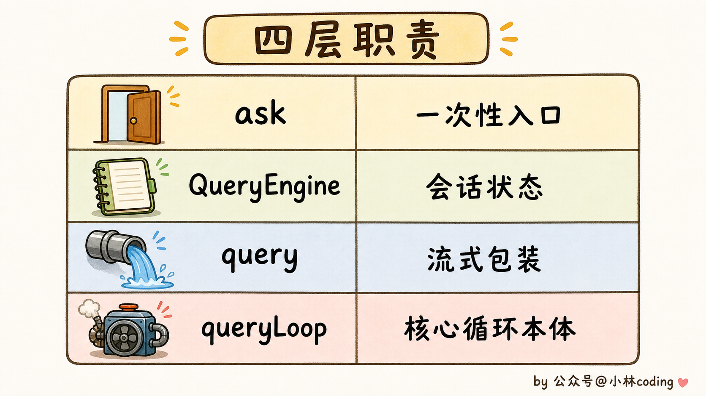
四层职责对照表
四层调用链解释完了，我们终于可以走进最里面那间屋子，看看主循环转一圈到底干了啥。
三、主循环转一圈，到底跑了哪些动作？
queryLoop 这个函数有近 1500 行，但骨架就是一个 while (true)。每一轮迭代，按顺序做五件事。
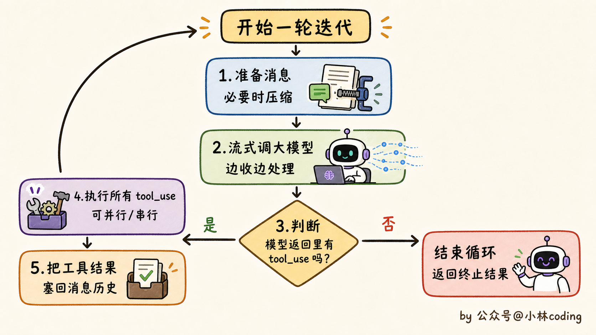
主循环五步流程图
这张图就是整个主循环的「素描」。如果你更喜欢从代码视角看，把这个流程翻译成伪代码就是：
async function* queryLoop(params) {
let state = { messages: [...], turnCount: 1, ... }
while (true) {
// 1. 准备消息：必要时压缩
const messagesForQuery = maybeCompact(state.messages)
// 2. 流式调大模型，边收边处理
let toolUseBlocks = []
let needsFollowUp = false
for await (const chunk of callModel(messagesForQuery)) {
yield chunk // 文字块即时抛给用户
if (chunk 是 tool_use 块) {
toolUseBlocks.push(chunk)
needsFollowUp = true
}
}
// 3. 判断继续还是结束
if (!needsFollowUp) {
return { reason: 'completed' }
}
// 4. 执行所有 tool_use（可并行/串行）
const toolResults = await runTools(toolUseBlocks)
// 5. 塞回结果进下一轮
state = {
...state,
messages: [...messagesForQuery, ...assistantMessages, ...toolResults],
turnCount: state.turnCount + 1,
}
// continue 回到 while 头部
}
}
伪代码里这个 state 对象就是第六章要展开讲的「跨轮状态对象」，这里先记个脸熟。
下面我把每一步拆开讲。
第一步：准备消息。
每一轮开始，主循环要拿到「截至目前的完整对话历史」，准备喂给模型。这里有个细节很容易被想当然：消息历史不是每轮开头都主动压一遍的，而是被动触发。主循环先按原样把消息发出去，只有 API 返回 prompt_too_long（413）拒收了，才补救压缩一次再重试这一轮。如果压完还是塞不下，就老老实实退出。
为什么不主动压？因为压缩本身也要烧 token 调一次小模型做摘要，能不压就不压。主循环的策略很朴素：先试试看，被拒了再补救。
State.hasAttemptedReactiveCompact 这个标志位的作用，是同一轮内防止反复压。一次压完还是塞不下，就别再压第二次了，避免陷入「压缩 → 还是塞不下 → 再压」的死循环。新一轮开始时这个标志会被重置。
Claude Code 的压缩策略我之前专门写过一篇（公众号文章《Claude Code 上下文压缩机制详解》），这里就不重复展开了。
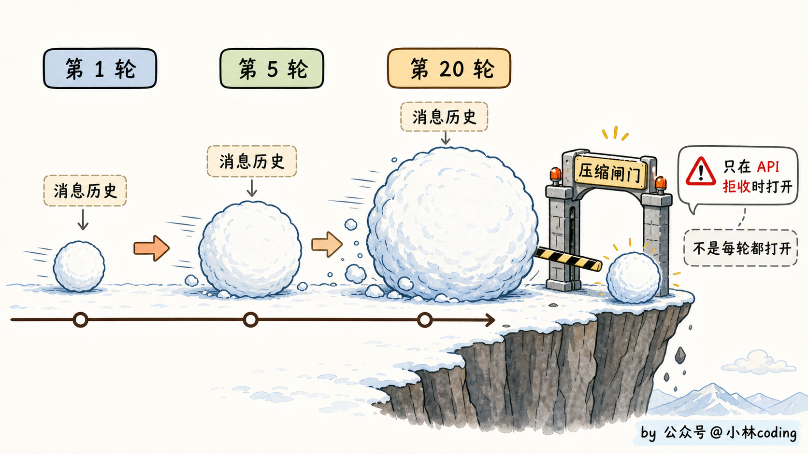
消息历史滚雪球示意图
第二步：流式调大模型。
讲这一步之前，我得先帮大家把一个后面会反复出现的概念铺一下，否则后面看代码会很懵。
模型回话的两种姿势
大模型每次回复你的内容，并不是只有一种格式。仔细看 Claude API 的返回，你会发现模型每次回复，里面可能塞着两种东西：
- 第一种是「文字块」，就是普通的文字内容，比如「这个 bug 是因为变量没初始化」。这是模型在跟你说话。
- 第二种是「工具调用块」，长得像
{ 工具名: "Read", 参数: { 文件路径: "config.ts" } }这种结构化的请求。这是模型在告诉你「我现在想用某某工具，参数是这些，麻烦你帮我跑一下」。
这种「工具调用块」在 Anthropic API 协议里有个专门的名字，叫 tool_use 块（直译就是「使用工具」的意思）。后面的文字里我会经常用这个词，你只要记住「模型说要用工具的请求，就叫一个 tool_use 块」就够了。
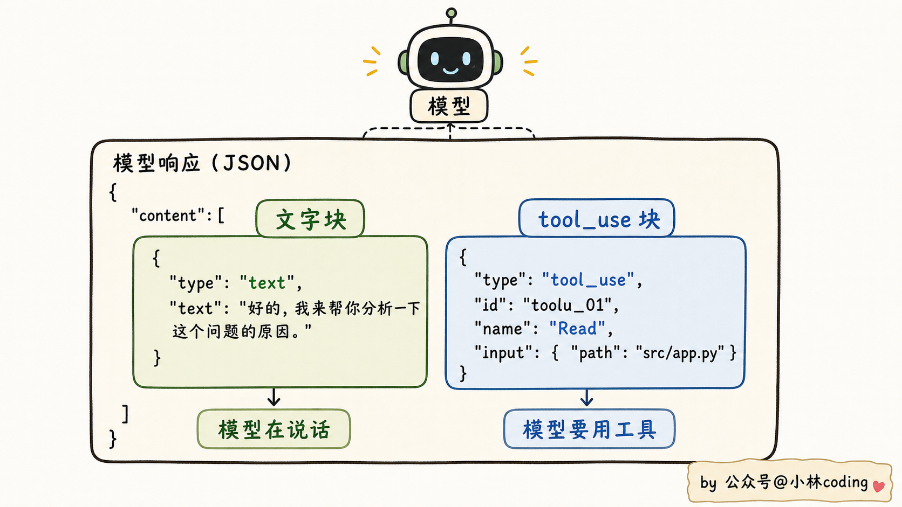
文字块 vs tool_use 块对比图
铺垫完毕，回到第二步。
调模型这一步是用流式接收的，模型每吐出一小段内容（可能是几个字符），主循环立刻就能拿到。收到的可能是文字块的一部分，也可能是 tool_use 块的一部分。
主循环一边收，一边干两件事：把文字块往上抛出去（让用户能即时看到模型在打字），把 tool_use 块攒起来准备等会儿执行。
第三步：判断继续还是结束。
模型流完之后，主循环要回答一个最核心的问题：这一轮对话结束了，还是要继续？
这是整个主循环的「决策点」，我下一章专门讲。
第四步：执行所有 tool_use。
如果判断要继续，就把模型这一轮要求的所有工具调用都跑掉，拿到每个工具的执行结果。Claude Code 在这一步有一个非常骚的「流式并行」设计，第五章细讲。
第五步：塞回结果，进下一轮。
所有工具结果跑完了，把它们当作「user 角色的消息」塞回消息历史里，更新一下「跨轮要带的状态对象」（这个状态对象第六章会专门讲），然后 continue 回到 while 头部。
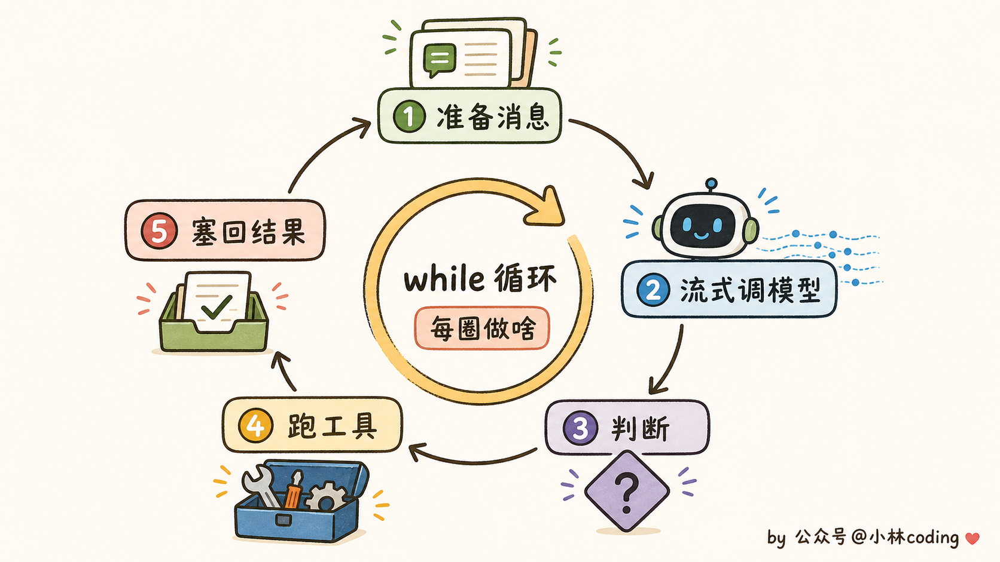
五步骨架环形图
注意一个细节：每跑一轮，消息历史都会变长（assistant 的回复 + 工具结果）。如果主循环跑了 20 轮，那第 20 轮发给模型的消息历史里，就有前 19 轮所有的对话和工具结果。
这也是为什么压缩机制要存在：消息历史会像滚雪球一样越滚越大，不压就会爆炸。
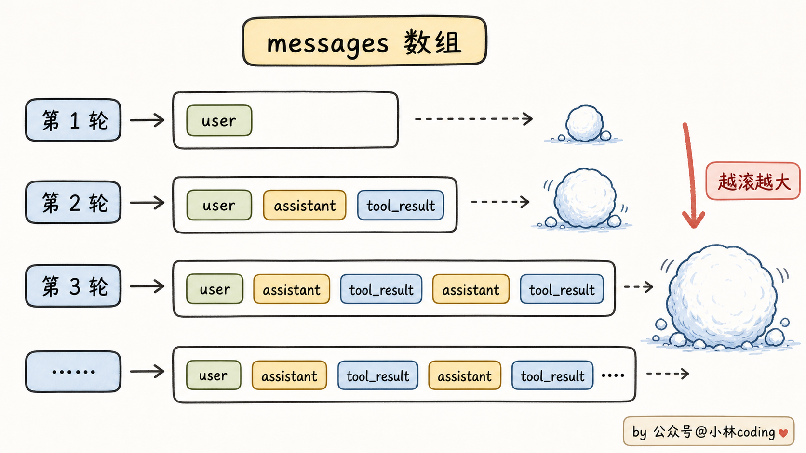
一轮迭代消息累积示意图
主循环的骨架就这样。但「骨架」不等于「细节」，真正考验工程功力的是后面三章要讲的东西。
四、Agent 怎么知道「该用工具」还是「该停下来」？
承接上一章的「决策点」，主循环第三步那个判断到底怎么做的？
我跟你说，这个判断简单到出乎你的意料：就看模型返回里有没有 tool_use 块。
主循环内部用一个布尔变量记录「这一轮要不要继续」，这个变量在源码里叫 needsFollowUp（直译就是「需要后续动作」）。判断逻辑就一条：
- 有
tool_use块 → 把needsFollowUp标记为 true → 执行工具 → 继续循环 - 没有
tool_use块 → 模型在跟你说话 → 结束循环
退出的时候，主循环还会附带一个「退出原因码」（在源码里叫 reason），告诉外面是因为啥结束的。最常见的退出原因叫 completed，意思就是「正常完成」。代码大致长这样：
if (!needsFollowUp) {
// 模型没要求调工具，对话正常结束
return { reason: 'completed' }
}
// 有 tool_use，跑完工具后 continue 回循环头
就这么个判断，没有什么复杂的状态机，没有什么意图识别，没有什么投票表决。
为啥这么简单？因为「决定下一步做什么」这件事，本身就是大模型的工作。你只要看它最后吐出来的是「文字」还是「工具调用请求」，就知道它的意图了。
我打个比方。你跟工位旁边的同事说：「帮我看下这个 bug。」他要么回你：「我得先看看你那段代码。」（动手 → 用工具），要么直接告诉你：「这是因为 X 导致的，你这样改一下就好了。」（停下 → 给答复）。
Claude 主循环的判断逻辑就是这么朴素。
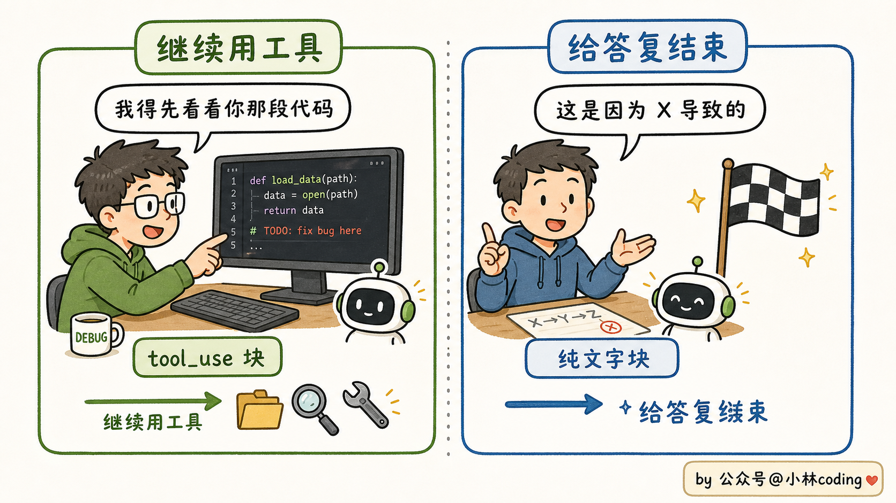
tool_use 决策类比图
但是！「停下来」并不只有「正常完成」这一种姿势。
这才是真正的工程深水区。
在 Claude Code 的主循环里，退出原因有十多种，每一种背后都对应着一个曾经踩过的坑：
- 正常完成（
completed）：模型说「搞定了」，对话结束。这是最幸福的一种 - 轮数封顶（
max_turns）：调用方传了maxTurns参数时生效，跑到上限就强行止损，防止模型跑飞烧钱（不传则不封顶，由其他退出条件兜底） - 流式调模型时被中断（
aborted_streaming）：模型还在吐字，用户按了 Ctrl+C - 工具执行时被中断（
aborted_tools）：工具跑到一半，用户按了 Ctrl+C - 输入超长救不回来（
prompt_too_long）：消息历史太长，连压缩都塞不进上下文窗口 - 输出超长救不回来（
max_output_tokens_recovery）：模型输出被截断，尝试 3 次续写后还是不行 - 被用户钩子拦下（
stop_hook_prevented）：用户配置了自定义钩子主动喊停（比如规定 git push 前必须先跑 lint，lint 没过就拦下，这个钩子机制叫 Stop Hook） - 图片格式错误（
image_error）：传图的时候格式不对
这里列的是最有代表性的 8 个。源码里实际定义了 17 种 reason，剩下的多是细分子情况，原理一致，不影响理解。
看到这十几种 reason，你应该能感受到一件事：一个工业级的 Agent 主循环，它要兜住的从来不是「正常退出」，而是十几种「异常退出」。
我们用一张图把这些退出 reason 按性质归一下类：
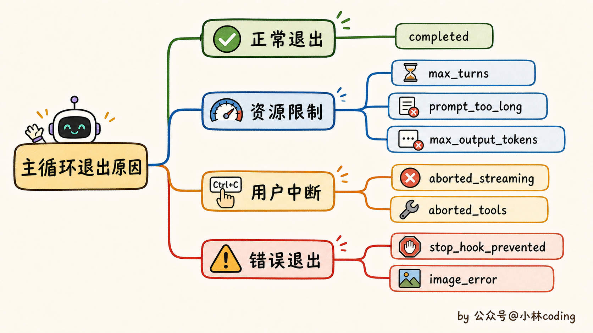
主循环退出原因分类图
这张图能让你直观感受到：正常完成只是分支里最小的一支，其他三支才是大头。
每一种异常退出，都不是一个简单的 throw new Error，而是需要：
- 第一，识别这种错误状态（每种错误的特征不一样）；
- 第二，做必要的清理（比如取消正在跑的工具、解锁资源）；
- 第三，返回结构化的
reason，让外层调用者知道是什么原因结束的，方便上报、重试或者给用户友好提示。
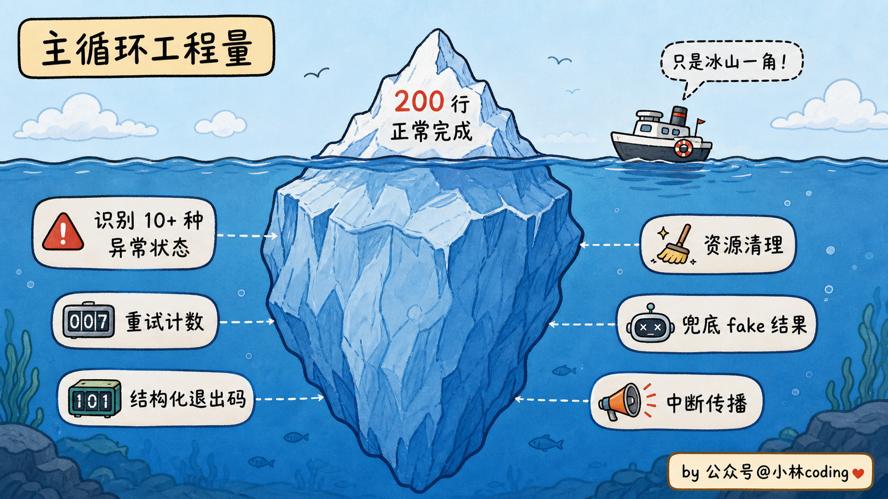
主循环工程量冰山图
这才是「主循环」三个字背后真正的工程量。
五、模型还在吐字、工具就开跑了？这怎么做到的？
讲完决策，我们看主循环第四步：执行工具。
这一步是 Claude Code 整个主循环里最骚的设计，我必须单独开一章来讲。
我们先想想朴素做法是什么样的。
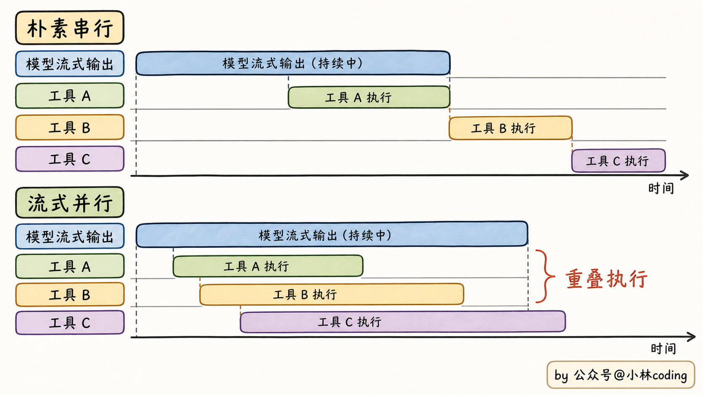
朴素串行 vs 流式并行时间线
朴素做法是这样的：
- 第一步，等模型完整流完，把所有
tool_use块都收齐。 - 第二步，挨个执行这些工具，等所有工具跑完。
- 第三步，把结果塞回去，进下一轮。
这个流程没毛病，能跑通。但仔细想想，模型在「吐字」期间，工具在干等。工具开始执行了，模型又在干等。两段时间完全串行，CPU 和网络都在浪费。
Claude Code 的做法是这样：
模型一边流式输出，主循环就一边监听。一旦识别出一个完整的 tool_use 块，立刻把它丢给后台开始执行，不等模型流完。等模型流完，最早开始执行的那个工具，可能已经回结果了。
这个负责后台执行的对象叫 StreamingToolExecutor（直译就是「流式工具执行器」）。它的核心就两个动作：「边收边开跑」和「最后一次性收结果」。
我把源码精简到最小，就两行：
// 模型流式输出时，每识别到一个工具调用就立刻丢到后台开跑
streamingToolExecutor.addTool(toolBlock, message)
// 模型流完后，把所有已完成的工具结果一次性收回来
const toolUpdates = streamingToolExecutor.getRemainingResults()
第一行 addTool，发生在主循环监听到模型吐出一个 tool_use 块的瞬间。这个工具立刻在后台开跑，主循环不等它，继续监听模型的下一段输出。
第二行 getRemainingResults，发生在模型完整流完之后。这时候所有工具都已经在后台跑了一会儿了，这里只是把已完成的结果一次性收上来。
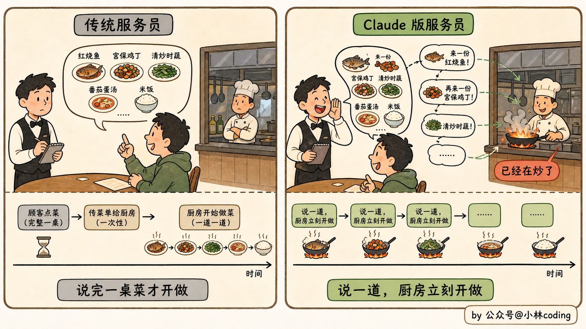
点菜类比示意图
用「点菜」打个比方就清楚了。
传统模式是：你完整说完「我要一个红烧肉、一个清炒空心菜、一个鱼香肉丝」，服务员拿着单子跑去厨房，厨房才开始一道一道做。
Claude Code 的模式是：你说「我要一个红烧肉」，服务员立刻冲到后厨喊「红烧肉一份！」，你接着说「再来一个清炒空心菜」，服务员又喊「空心菜一份！」。等你点完，红烧肉已经在锅里炒了一半了。
最终上菜时间，比传统模式快了一大截。
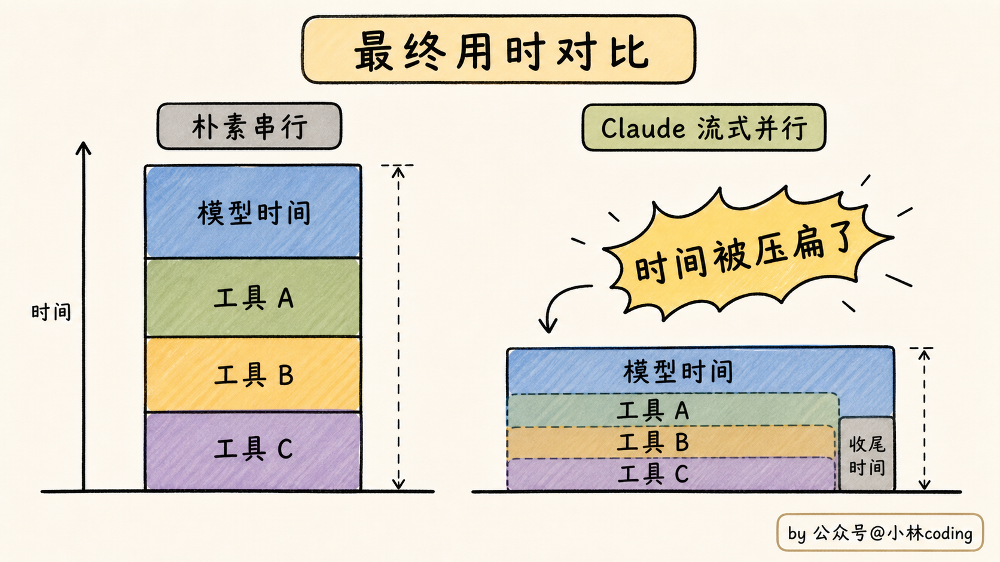
最终用时对比柱状图
但并不是所有工具都能这么并行。这里有个边界要讲清楚。
Claude Code 的工具在定义的时候，每个工具都有一个属性，标明它是「只读」还是「会改东西的」。
- 只读工具（比如 Read、Grep、Glob）：可以随便并行。你同时读 10 个文件，互不干扰
- 会改状态的工具（比如 Edit、Write、Bash）：必须串行。两个写文件操作如果并发跑，可能互相覆盖
这个属性是在工具定义时就声明的。
如果开发者一时忘了写，框架会 fail-closed 兜底，默认当成「会改东西的工具」（值为 false），强制串行执行。
也就是说，宁可错杀让你慢一点，也绝不会因为漏写而出现并发踩踏。
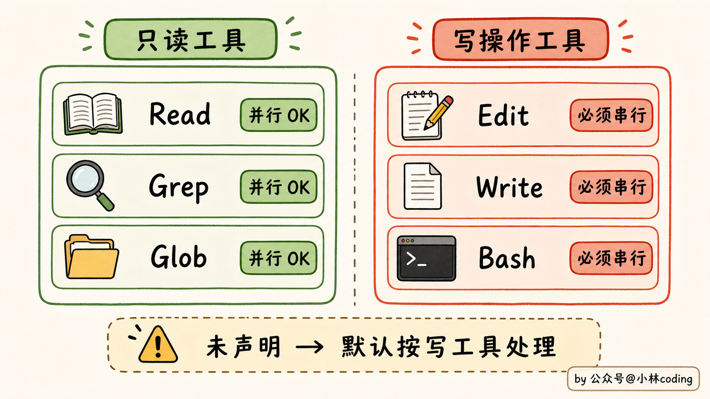
只读 vs 写操作并行性对照图
讲到这里，我想抛出一个延伸思考：Claude Code 让 Agent 跑得快的秘密，不在于模型多聪明，而在于工程上把每一段空闲时间都榨干。
这种「流式 + 并行」的设计，是把模型生成时间和工具执行时间高度重叠，最大化利用每一秒。
这才是真正的工程功力。
六、出错的时候，主循环凭什么让你毫无察觉？
前面五章把主循环的正常路径讲完了。但回到开头那个问题，你按下回车后那 30 秒里，主循环转的可不只是「调模型 + 跑工具」这么干净。
中间随便一个意外：网络抖一下、你按一次 Ctrl+C、模型一口气想说太多话，都可能让对话卡死、报错或者结果残缺。
Claude Code 之所以让你感觉不到这些意外，是因为主循环里藏了一堆兜底机制。这一章就挑三个最关键的细节讲讲：你看不见的部分，主循环都帮你处理了什么。
6.1 跨轮状态对象：为什么不能用「全局变量」糊弄？
我们先想一个朴素问题：主循环是个 while (true)，那「这一轮发生了什么」要怎么传给下一轮？
最朴素的做法是用闭包变量或者全局变量，比如「重试次数」就放一个外部变量，每轮 +1。能跑，但调试起来是噩梦：你看到代码继续循环了，根本不知道是因为哪个标志位被改了。
Claude Code 的做法是把所有跨轮要传的字段，全部打包到一个状态对象里，每一轮迭代开头读出来，结尾构造一个新的写回去。这个状态对象在源码里叫 State。
State 的关键字段长这样（我精简了一下，只保留最有代表性的几个）：
type State = {
messages: Message[] // 累积的对话消息历史
turnCount: number // 当前是第几轮
maxOutputTokensRecoveryCount: number // 输出截断已经恢复了几次
hasAttemptedReactiveCompact: boolean // 本轮是不是已经触发过压缩了
}
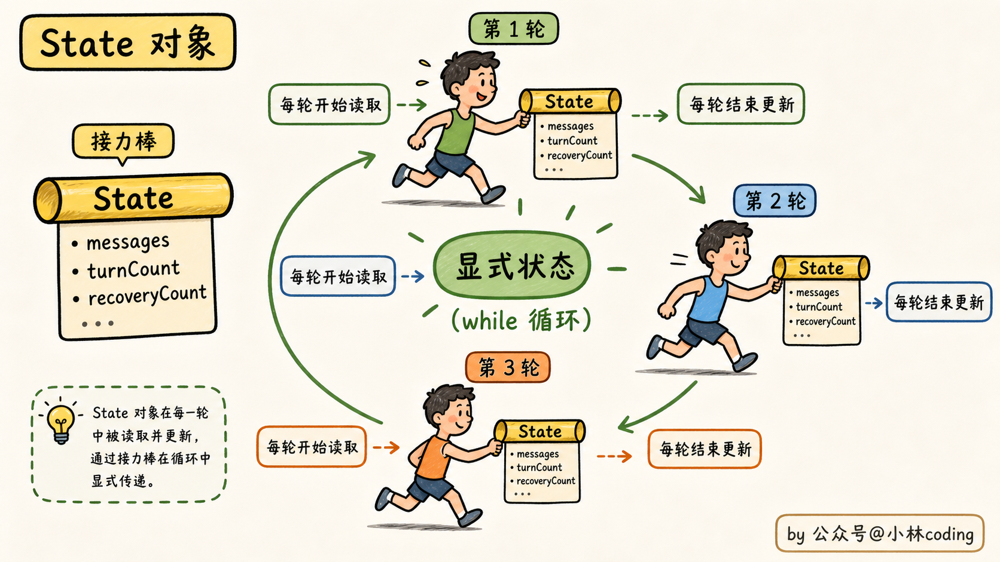
状态对象跨轮传递示意图
注意看后面两个字段，一个是「已经恢复了几次」，一个是「本轮是不是已经压缩过了」。它们的本质都是「计数器」或「防重复标志」（同一轮内只让某件事发生一次），目的就一个：避免无限循环。
举个例子：模型输出超长被截断了，主循环尝试恢复一下。如果恢复又失败，再来一次。但你不能无限重试，否则就死循环了。所以要计数：最多 3 次，超过就老老实实退出。
再比如：上下文塞不下了，主循环触发一次压缩。但同一轮内只能压一次，否则连续压缩没意义还浪费 token。所以要标志位：本轮已经压过了，就别再压了。
这些状态如果全藏在闭包变量里，调试的时候你根本不知道循环是因为什么继续的。摊在一个状态对象里，每一轮的「现场」都一目了然。
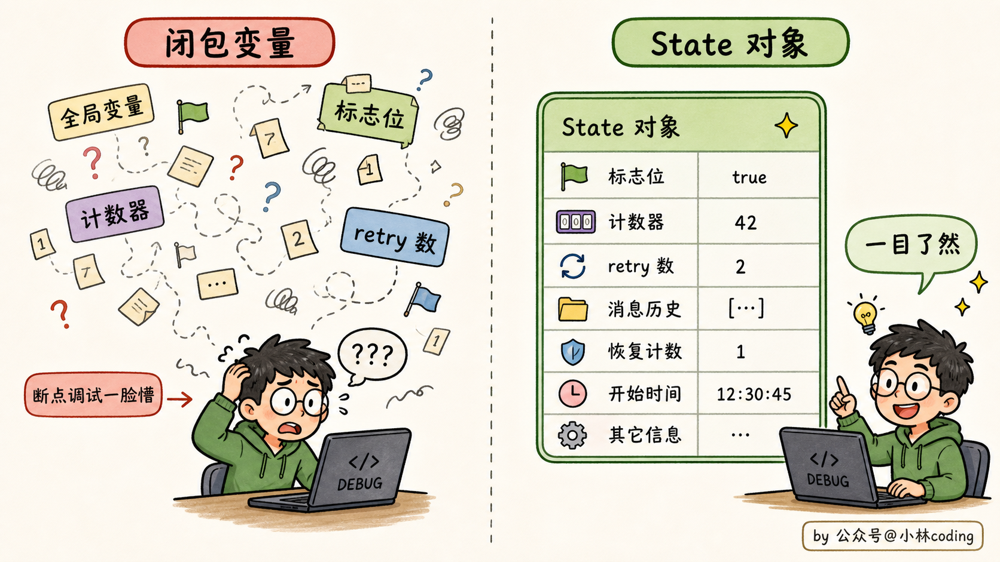
闭包变量 vs 状态对象对照图
这就是为什么你用 Claude Code 跑几十轮工具也不会陷进死循环，所有「还要不要继续」的标志都摊在明处，每一轮的「现场」都能干净结束，不会因为某个藏起来的变量没复位就鬼打墙。
6.2 工具跑挂之后，对话凭什么还能继续？
这是一个 Anthropic API 的「冷知识」，没踩过坑的人根本想不到。
我先把这条 API 协议规矩说清楚：
第三章我们讲过，模型回话时会吐出 tool_use 块（工具调用请求）。工具跑完之后，要把执行结果以另一种格式塞回消息历史，这种「工具执行结果」叫 tool_result 块。
API 协议有一条死规定：每个 tool_use 块，必须有一个对应的 tool_result 块跟它配对。如果消息历史里有个孤零零的 tool_use 没人接，下一轮请求直接被 API 拒收，报错说「工具调用 ID 对不上」。
正常情况下没问题，工具跑完就有结果，配对很自然。但出错的时候呢？
比如：模型刚吐完 tool_use 块，网络突然断了，工具根本没开始跑；或者工具跑到一半，用户按了 Ctrl+C；或者模型出了问题，主循环临时切换到备用模型（这种切换机制叫「模型降级」），前一个模型吐出的 tool_use 就没机会执行了。
这些情况下，消息历史里就有了「孤立的 tool_use 块」。你不处理，下一轮想再调模型，API 直接拒收，会返回一个「请求格式不对」的错误。
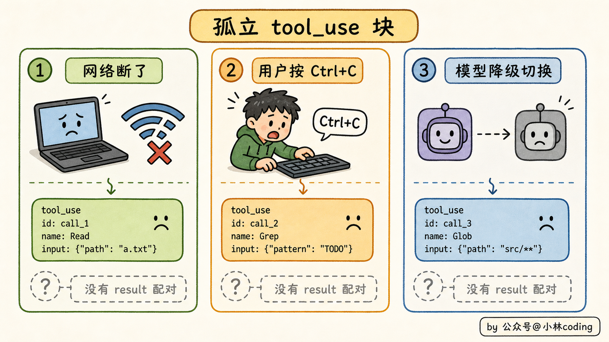
孤立 tool_use 块三种场景图
Claude Code 的方案听起来有点奇葩：合成一个假的工具结果塞回去，内容写「这个工具因为 XX 错误没执行」。主循环里专门有段代码干这事，函数名也很直白，直译过来就是「把缺失的工具结果块补上」（源码里叫 yieldMissingToolResultBlocks）。
这段补救代码就三个关键：标明类型是 tool_result、内容是错误消息、附上对应的工具调用 ID 让 API 能配对上。简化后长这样：
yield 一条用户角色消息({
类型: 'tool_result', // 标明这是个工具结果
内容: '这个工具没执行成功', // 解释为啥失败
is_error: true, // 打个错误标记
tool_use_id: 对应的工具调用ID, // 让 API 能配对上
})
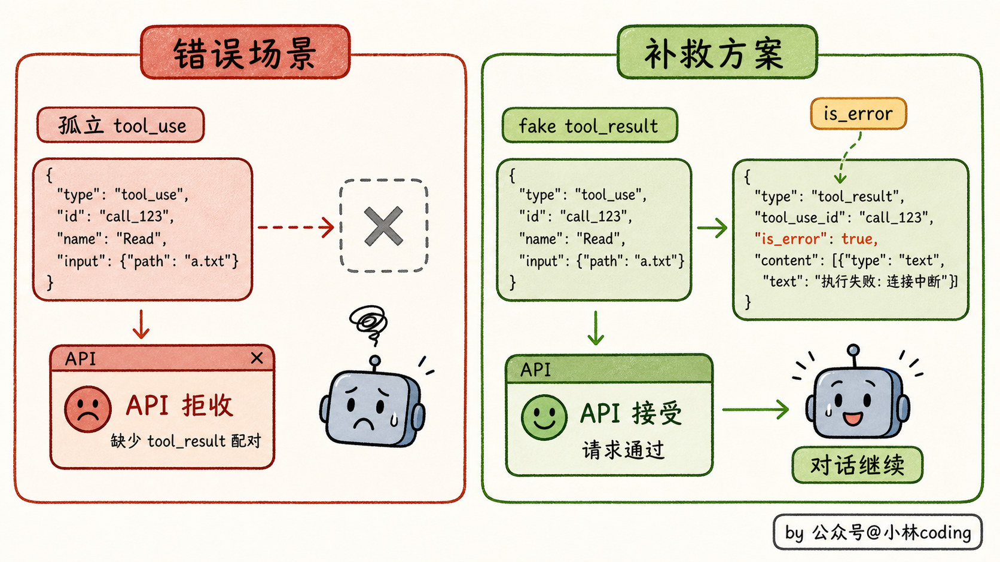
孤立 tool_use 补救方案图
这种设计可以叫「先认错，再继续」。API 协议是死的，但通过合成一个明确标了「这是错误」的假结果，主循环至少不会因为一个错误就彻底卡死，还能让模型知道「上个工具失败了」，从而做出合理的下一步决策。
这就是为什么你用 Claude Code 按 Ctrl+C 打断之后，下一句话依然能接得上，主循环替你把那个「没人接的工具调用」伪造了一个错误结果，让 API 协议这个死规矩不会因为一次中断就把整个对话废掉。
6.3 模型输出被截断了，怎么让用户根本感觉不到？
最后一个细节，关于「模型输出超长被截断」这个常见问题。
模型每一次返回都有个最大 token 数限制。Claude Code 常规默认是 32k，但在某些灰度场景下（背后是个可以开关的「特性开关」控制位）会被压到 8k 以控费。一旦模型一口气想吐 12k 的内容，到 8k 就被强行截断，剩下的 4k 没出来。这种状态在 API 协议里叫「输出 token 上限错误」。
换作一个简单点的实现可能就直接弹个错误框：「输出过长了，请重试」。或者更糟，干脆忽略截断，让你看到一段戛然而止的回答。
Claude Code 的处理是两段式的，非常有意思。
第一段：静默升档。
模型第一次触发 8k 截断时，主循环不报错，悄悄把上限调到 64k 然后重试这一轮。用户完全感知不到出过错，只是觉得「这次模型答得稍微慢了点」。
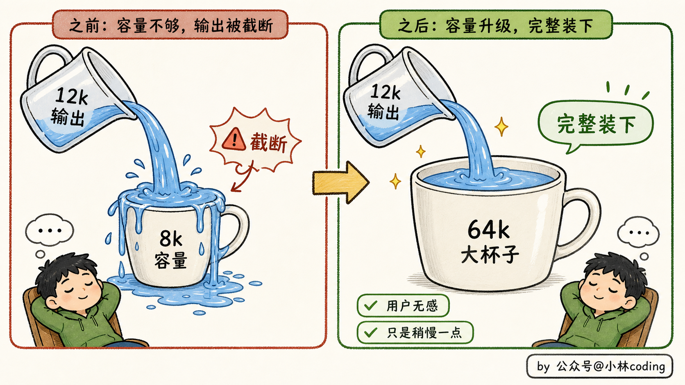
8k 到 64k 静默升档示意图
第二段：在下一轮消息里轻轻推一把，让模型自己续写。
如果调到 64k 还截断，那是真的输出太长了。
这时候主循环会在下一轮的消息里，塞一段话给模型：「上次输出超长被截断了，请直接从断点续写，不要道歉、不要回顾你刚才在干什么、把剩余工作拆成更小的块」（英文原文是 Output token limit hit. Resume directly — no apology, no recap...，后面还会指示模型「从断点续写、把剩余工作拆小」）。
让模型从断点继续往下写。
这种「在消息里轻推一把提示模型续写」的动作，英文里叫 nudge（轻推）。但 nudge 不能无限循环，会陷入死锁。
所以源码里写死了 3 次上限：续写 3 次还不行，主循环就老老实实退出，返回原因「输出超长救不回来」。
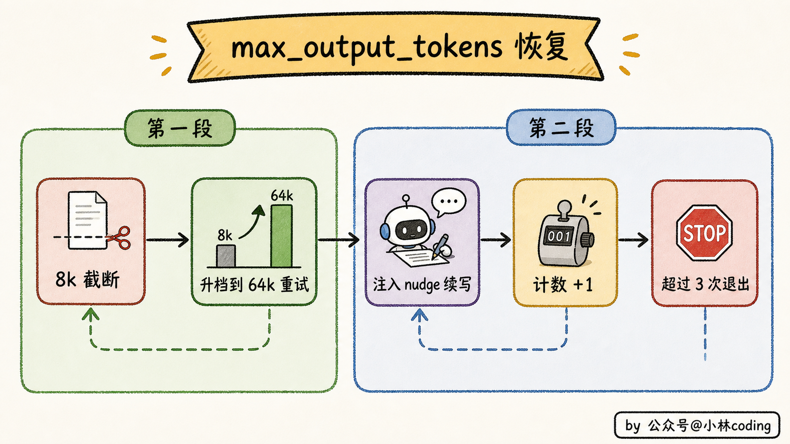
max_output_tokens 两段式恢复流程图
我想在这里抛出一个延伸思考：工业级的容错，不是「报错弹窗」，而是用户根本感觉不到出过错。
你用 Claude Code 这么多天，可能从来没注意过模型输出被截断这件事，因为它在背后默默地帮你处理了。这就是好工程的样子。
七、写在最后：主循环背后藏着哪些设计哲学？
从整篇文章扒下来，我觉得 Claude Code 主循环背后有四个设计哲学，值得反复琢磨：
一、边干边吐，让感知前置。 用异步生成器把每个中间事件即时抛出去，用户体感「响应快」就是这么来的。
二、状态显式管理。 该计数的字段全部摊在一个状态对象里，不藏在闭包变量里。能调试的状态才是可靠的状态。
三、引擎层不掺业务。 主循环不知道工具具体在干嘛，新增能力零侵入，只需要往工具池里塞一个新工具就完事。
四、错误恢复优先于优雅。 每个失败路径都有兜底。宁可丑陋地合成一个假的工具结果塞回去，也不能优雅地崩溃。
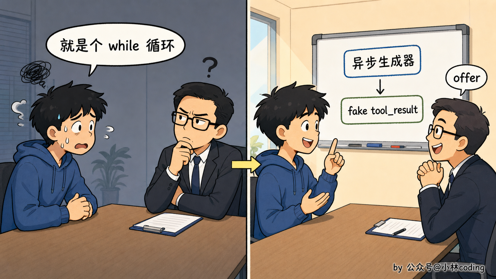
面试场景呼应图
回到开篇那个面试场景。
再被问到「Claude Code 主循环 Query 是怎么跑的？」.
你能从「为什么主循环不能简单写成 while true」一路讲到「工具跑挂之后怎么让对话不卡死」「模型输出截断了怎么悄悄帮用户续上」，再补一句「主循环用流式监听 + 后台并行，把模型生成时间和工具执行时间叠在一起」，面试官就知道你不是在背概念，而是真的拆过源码、想过工程问题。
这才是这道面试题真正想考的东西。
如果你觉得这篇文章对你有启发，欢迎点个「在看」和「赞」，这是对小林最大的肯定和帮助。
我们下一篇见啦！